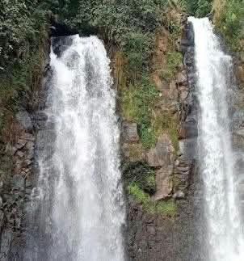

Curug Cinulang Cicalengka: Daya Tarik Air Terjun Kembar, Lokasi, Rute, dan Tips Berkunjung

Bandung Timur memiliki sejumlah destinasi wisata alam yang menarik untuk dikunjungi. Salah satunya adalah Curug Cinulang, sebuah objek wisata air terjun yang dikenal karena memiliki dua aliran air yang jatuh berdampingan di tengah kawasan alam yang masih asri.
Curug Cinulang juga sering disebut Curug Sindulang. Lokasinya berada di kawasan Tanjungwangi, Kecamatan Cicalengka, Kabupaten Bandung, Jawa Barat, tidak jauh dari perbatasan Kabupaten Sumedang.
Keindahan air terjun, suasana pepohonan, serta udara kawasan perbukitan menjadikan tempat ini salah satu pilihan wisata alam bagi masyarakat Bandung, Sumedang, dan daerah sekitarnya.
Bagi yang sedang mencari tempat untuk menikmati suasana alam tanpa harus melakukan perjalanan wisata yang terlalu jauh dari kawasan Bandung Timur, Curug Cinulang bisa menjadi salah satu destinasi yang menarik untuk dipertimbangkan.
1. Mengenal Curug Cinulang atau Curug Sindulang
Curug Cinulang merupakan objek wisata alam berupa air terjun yang berada di kawasan Cicalengka. Nama Curug Sindulang juga cukup dikenal masyarakat karena berkaitan dengan wilayah Desa Sindulang yang berada di sekitar kawasan wisata tersebut.
Keunikan tempat ini terletak pada dua aliran air terjun yang tampak berdampingan. Pemandangan tersebut membuat Curug Cinulang sering dikenal sebagai salah satu air terjun kembar yang menjadi daya tarik wisata Bandung Timur.
Berdasarkan sejumlah informasi pariwisata, ketinggian air terjun ini diperkirakan mencapai sekitar 50 hingga 60 meter. Suara aliran air yang jatuh dari ketinggian menjadi salah satu pengalaman tersendiri bagi pengunjung.
Curug Cinulang juga telah dikenal sebagai salah satu daya tarik wisata alam unggulan di kawasan Cicalengka dan sekitarnya.
2. Daya Tarik Wisata Curug Cinulang
Air terjun dengan dua aliran berdampingan
Hal paling menarik dari Curug Cinulang adalah keberadaan dua aliran air terjun yang jatuh berdekatan. Pemandangan ini memberikan karakter tersendiri dibandingkan beberapa objek wisata air terjun lainnya.
Pengunjung dapat menikmati pemandangan air yang jatuh dari tebing dengan latar pepohonan dan lingkungan alam di sekitarnya.
Suasana alam yang sejuk
Berada di kawasan perbukitan Cicalengka, lingkungan sekitar Curug Cinulang memiliki nuansa alam yang berbeda dari suasana perkotaan. Pepohonan dan aliran air memberikan suasana yang cocok untuk bersantai sejenak.
Tempat seperti ini dapat menjadi pilihan bagi masyarakat yang ingin menikmati waktu bersama keluarga atau teman sambil melihat pemandangan alam.
Tempat menikmati fotografi alam
Keberadaan dua air terjun yang berdampingan menjadi salah satu objek menarik untuk fotografi. Pengunjung dapat mengabadikan pemandangan alam, aliran air, serta suasana kawasan wisata.
Namun, sebaiknya tetap memperhatikan keselamatan ketika mengambil foto, terutama di sekitar jalur yang basah, bebatuan, maupun area dengan arus air.
3. Lokasi Curug Cinulang Cicalengka
Curug Cinulang berada di kawasan Tanjungwangi, Kecamatan Cicalengka, Kabupaten Bandung, Provinsi Jawa Barat.
Lokasinya berada di jalur yang mengarah ke kawasan perbatasan Kabupaten Bandung dan Kabupaten Sumedang. Karena itu, destinasi ini cukup dikenal oleh masyarakat dari kedua wilayah tersebut.
Informasi lokasi:
Nama: Curug Cinulang / Curug Sindulang
Kawasan: Tanjungwangi
Kecamatan: Cicalengka
Kabupaten: Bandung
Provinsi: Jawa Barat
📍 Peta Lokasi Curug Cinulang
Gunakan Google Maps untuk membantu menemukan lokasi wisata Curug Cinulang sebelum melakukan perjalanan.
4. Rute Menuju Curug Cinulang
Salah satu jalur yang dapat digunakan untuk menuju Curug Cinulang adalah melalui kawasan Cicalengka, Kabupaten Bandung.
Bagi pengunjung dari arah Bandung, perjalanan dapat diarahkan menuju kawasan Cileunyi dan Cicalengka melalui jalur Bandung–Garut. Setelah tiba di kawasan Cicalengka, perjalanan dilanjutkan mengikuti petunjuk arah menuju Jalan Curug Cinulang.
Sementara itu, pengunjung dari wilayah Sumedang dapat menyesuaikan perjalanan melalui jalur yang mengarah ke kawasan Cicalengka dan perbatasan Bandung–Sumedang.
Untuk mempermudah perjalanan, pengunjung sebaiknya menggunakan aplikasi navigasi seperti Google Maps dan memastikan titik tujuan yang dipilih adalah Curug Cinulang di Cicalengka.
Kondisi perjalanan dapat berbeda tergantung titik keberangkatan, kepadatan lalu lintas, dan kondisi jalan. Sebaiknya periksa rute terlebih dahulu sebelum berangkat.
5. Harga Tiket Masuk Curug Cinulang
Informasi harga tiket masuk Curug Cinulang yang beredar di internet memiliki beberapa perbedaan.
Dalam Peraturan Daerah Kabupaten Bandung Nomor 9 Tahun 2025 tentang Pajak Daerah dan Retribusi Daerah, tercantum tarif pelayanan objek wisata Curug Cinulang sebesar Rp10.000 per orang.
Sementara itu, sejumlah informasi wisata lainnya menyebutkan harga tiket yang berbeda. Hal ini memungkinkan adanya perbedaan antara tarif resmi yang tercantum dalam peraturan dengan harga atau pungutan yang berlaku pada kondisi kunjungan tertentu.
Oleh karena itu, pengunjung sebaiknya memastikan harga tiket terbaru langsung kepada pengelola atau petugas loket sebelum berkunjung.
Catatan untuk pengunjung:
Jangan hanya mengandalkan informasi harga tiket dari artikel lama. Siapkan uang tambahan untuk kebutuhan parkir, makanan, minuman, atau biaya lain selama perjalanan.
6. Jam Operasional Curug Cinulang
Sejumlah informasi lokasi wisata mencantumkan jam kunjungan Curug Cinulang mulai sekitar pukul 08.00 WIB hingga sore hari.
Informasi jam operasional yang tersedia menunjukkan perbedaan antara hari kerja dan akhir pekan. Pada hari kerja, jam kunjungan umumnya tercantum sampai pukul 16.00 WIB, sedangkan pada akhir pekan terdapat informasi hingga pukul 17.00 WIB.
Jam operasional dapat berubah mengikuti kebijakan pengelola dan kondisi di lokasi. Sebaiknya datang lebih awal agar memiliki waktu yang cukup untuk menikmati kawasan wisata.
7. Aktivitas yang Bisa Dilakukan di Curug Cinulang
Berkunjung ke Curug Cinulang tidak harus selalu diisi dengan aktivitas bermain air. Ada beberapa kegiatan sederhana yang dapat dilakukan untuk menikmati suasana alam.
- Menikmati pemandangan: Mengamati dua aliran air terjun dan lingkungan alam di sekitarnya.
- Fotografi: Mengambil foto pemandangan air terjun, pepohonan, dan suasana wisata.
- Bersantai: Menikmati suasana kawasan wisata bersama keluarga atau teman.
- Wisata keluarga: Menghabiskan waktu bersama keluarga dengan tetap memperhatikan keamanan setiap anggota keluarga.
- Menjelajahi kawasan sekitar: Mengenal suasana pedesaan dan lingkungan alam di sekitar Cicalengka.
8. Tips Aman Berkunjung ke Curug Cinulang
Wisata air terjun memiliki karakteristik lingkungan yang berbeda dengan wisata perkotaan. Jalur yang basah, bebatuan, serta aliran air perlu diperhatikan agar perjalanan tetap aman.
Berikut beberapa tips yang bisa dipersiapkan sebelum mengunjungi Curug Cinulang:
- Gunakan alas kaki yang tidak licin. Sepatu atau sandal dengan daya cengkeram baik lebih sesuai untuk jalur wisata alam.
- Datang pada pagi atau siang hari. Waktu tersebut memberikan kesempatan lebih banyak untuk menikmati kawasan wisata sebelum sore.
- Perhatikan kondisi cuaca. Hujan dapat meningkatkan debit air dan membuat jalur di sekitar curug menjadi lebih licin.
- Jangan mendekati arus air yang berbahaya. Hindari berenang atau bermain air ketika arus terlihat deras.
- Awasi anak-anak. Anak-anak harus selalu didampingi orang dewasa, terutama di sekitar tebing, sungai, dan bebatuan.
- Jangan membuang sampah sembarangan. Bawa kembali sampah pribadi agar kebersihan kawasan wisata tetap terjaga.
- Perhatikan petunjuk petugas. Ikuti aturan dan pembatasan akses yang berlaku di lokasi.
9. Mengapa Curug Cinulang Menarik untuk Dikunjungi?
Curug Cinulang menjadi salah satu pilihan wisata alam yang menarik di kawasan Bandung Timur karena memiliki karakter pemandangan yang cukup khas.
Dua aliran air terjun yang berdampingan, lingkungan yang rindang, dan suasana kawasan perbukitan menjadi kombinasi yang membuat tempat ini memiliki daya tarik tersendiri.
Keberadaannya di kawasan Cicalengka juga membuat Curug Cinulang dikenal oleh masyarakat dari Kabupaten Bandung maupun Sumedang.
Bagi masyarakat yang ingin mencari alternatif wisata alam untuk mengisi waktu libur, Curug Cinulang dapat dimasukkan ke dalam daftar destinasi yang layak dipertimbangkan.
Kesimpulan
Curug Cinulang atau Curug Sindulang merupakan salah satu destinasi wisata alam yang berada di kawasan Tanjungwangi, Kecamatan Cicalengka, Kabupaten Bandung, Jawa Barat.
Daya tarik utamanya adalah dua aliran air terjun yang berdampingan dengan ketinggian sekitar 50–60 meter. Suasana alam yang rindang dan lingkungan perbukitan menjadikannya salah satu pilihan wisata menarik di Bandung Timur.
Sebelum berkunjung, pastikan untuk memeriksa kondisi cuaca, rute perjalanan, harga tiket, dan jam operasional terbaru. Jangan lupa menjaga kebersihan serta mengikuti aturan keselamatan di kawasan wisata.
📦 Butuh Layanan Pengiriman Paket dari Bandung?
Setelah menikmati informasi wisata Curug Cinulang, jangan lupa bahwa kebutuhan pengiriman barang juga bisa dibantu melalui Lion Parcel Bandung POS101 Nanjungmekar Rancaekek.
Kami melayani kebutuhan pengiriman paket domestik maupun internasional sesuai ketentuan layanan dan komoditas yang berlaku.
Ingin bertanya mengenai tujuan pengiriman, estimasi biaya, atau persyaratan barang? Silakan hubungi kami melalui WhatsApp.
💬 Hubungi Lion Parcel POS101
Nama Agen: Lion Parcel Bandung POS101 Nanjungmekar Rancaekek
Jam Operasional: Senin–Minggu, 08.00–20.00 WIB
Alamat: Jl. Raya Barat Cicalengka RT 1 RW 1, Nanjung Mekar, Rancaekek, Kabupaten Bandung, Jawa Barat
WhatsApp: 0851-8309-0486